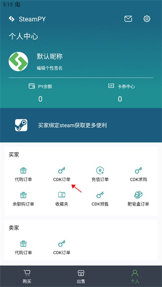
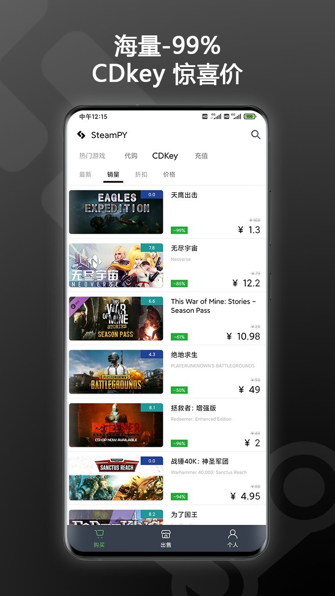

帮朋友代买Steam游戏，我把原来四步操作压成了一条链
一个每周帮三四位朋友代买Steam游戏的玩家，如何用一个手机App把找Key、送游戏、收款回血的全流程串起来，少了几次手动复制，也跳过了激活码中转的麻烦。
每周四晚上微信就开始响，朋友A要秋促打折的《黑神话》典藏版，朋友B托我捎一张独立游戏合辑，还有表弟总让我帮他捡漏几块钱的折扣Key。以前干这件事，我手机上至少要开四个应用来回切：浏览器搜价格、QQ传激活码、支付宝收款、Steam客户端验证入库。中间总有一两步掉链子——要么朋友不会激活Key问我半天，要么某笔钱忘了收月底对账才发现。
现在只剩一个App从头跑到尾。
旧流程的卡壳点，每一个都是额外操作
先把我之前的路子摊开说，别以为只是"开多个App"这么简单：
找价阶段：先在比价网站上圈出三个最低价渠道，分别打开确认库存和区服，截图发给朋友选。这一步光是切换应用就来回五六次。
购买与交付：选定后在渠道下单拿到激活码，复制到QQ或微信发给对方，再叮嘱他"打开Steam→左下角添加游戏→输入Key"。朋友中有人第一次弄，我得盯着他一步步点完才放心——光"怎么打开激活窗口"这句话我就发过不下二十遍。
回血阶段：有时候库存里囤的Key自己不用了，想卖掉回血，就去论坛发帖、私戳买家、走支付宝转账，再把Key发过去。收款要手动核对姓名，转账要等对方截图确认。
整个流程里，"激活码中转"是最脆弱的一环。Key发错人了、朋友输错一个字符、区服不匹配激活失败——这三类问题我遇到的概率几乎各占三分之一，每次出现都要再花十分钟排查。
新流程：一个App串起代购、送礼、挂卖、提现
这套链条的核心就是 steampy官网。它是一个面向Steam生态的交易与社交平台，既有低价CDKey渠道，又能直接把游戏送到朋友库里，还允许你挂自己的Key出售收款。我把它嵌进流程之后，原来四段独立操作变成了一条线性流水线。
第一步：绑定Steam账号（只做一次）
这是整个流程的门控，先下载装完App，不绑定后面全都动不了。打开App个人页，找到绑定入口，按引导跳转到Steam官方授权页登录，完成令牌验证就行。最容易踩坑的地方我帮你标出来——全程必须开加速器并加速Steam，没开或者节点不稳定的话，授权页要么加载不出来要么卡在登录中反复跳。我第一次绑的时候没开加速器，折腾了半小时才反应过来。
绑定完成后，App能读取你的Steam余额、代管你的激活操作，好友送礼的入库也走这条绑定通道。

第二步：找价与下单，卡券中心叠加优惠
绑定完就能正常逛平台了。首页按分类列了正在促销的游戏，点开看详情页时，App会自动显示这张Key的区服、是否有现货、能不能叠加优惠券。我的习惯是先去个人页的卡券中心扫一眼——平台在夏促秋促这类节点会通过社区活动和版本更新发无门槛券，面额10到50元不等，大部分限定国区CDKey商品。我一般会提前几天关注澡堂社区的活动帖，参与门槛不高，晒个订单或者回个帖就能抽券，运气好一次能拿到20元的。
领到的券直接在下单页抵扣，剩下的余额用PY余额或者其他支付方式补齐。这里比我之前在比价网站上挨个渠道翻省事多了——价格筛选、区服标识、券额抵扣全在同一个页面完成。

第三步：送礼入库，跳过Key中转
这是整个流程里改动最大的一环，也是最能感受到效率提升的地方。
朋友下单时，我不用再把激活码复制出来发给他——平台支持通过PY好友直接送礼入库。具体操作很简单：确认双方都已完成Steam绑定，在个人页的PY好友栏目里用专属好友代码互加，然后在下单CDKey的页面顶部点送礼入口，选好好友，确认区服匹配，一键下单后游戏直接进入他的Steam库。"CDK一秒送礼一键入库"不是广告词，我实际操作过，从点送礼按钮到朋友那边收到Steam入库通知，间隔不超过十秒。
这一步砍掉了我之前流程里最容易断链的环节——激活码中转。朋友不需要知道Key是什么、不需要自己去激活窗口输入，入库就是最终交付。唯一要注意的是区服匹配，跨区的Key送过去可能激活失败，下单前确认好Key适用的区服和朋友账号所在的区服一致就行。
第四步：挂卖与提现，回血闭环
有时候我囤的Key自己不用了，或者帮朋友代买多买了一张，直接在平台挂卖。上架入口在卖家订单那边，填好Key的区服和价格，平台帮你撮合买家。卖出后资金自动进入PY余额，不需要手动找买家、手动对账。
提现规则我摸得比较熟：每笔收1%手续费，最低1元、上限50元，每天只能提一笔，而且必须是整数金额。累积提现超过500元要过实名认证。steampy文档里有更完整的限额和渠道说明，大额提现前翻一下心里有数。我一般攒个四五天凑一笔整数提，这样手续费摊得薄一点。到账时间通常是次日，支付宝比银行卡快一些，但受每日一笔的限制，急用钱的时候得提前排。
流程里最容易断的两个点，我是怎么防的
加速器的问题刚才提过了，这里再说两个实操里高频掉链子的地方：
第一个是PY好友的区服不匹配。我一开始没在意，直接给一个美区的朋友送了国区Key，结果他那边入库失败，我这边订单还得走售后重发。现在的做法是，送礼前先在App里搜一下这个游戏的区服标识，确认和朋友的Steam账号区服一致——不一致的话要么换朋友，要么换Key，省得来回折腾。
第二个是优惠券的适用范围。促销季券多，我有时候凑着急了没仔细看适用条件，领了券下单才发现券只能用于某几个特定游戏或者某个价位以上的商品，白白浪费了一次券。现在的习惯是领券前先点开券的详情看一眼适用范围，标注"国区CDKey通用无门槛"的才领，限定条件多的直接跳过。
这套流程省了多少事，什么时候不划算
量化一下：以前帮朋友代买一单游戏，从我收到微信消息到朋友确认入库，平均耗时十五到二十分钟，其中至少两次手动复制粘贴（Key复制、微信发送），可能还有一次朋友不会激活的远程协助。现在整个流程压缩到五到十分钟，复制粘贴变成了零次，远程协助也消失了。
但这套流程也不是包打天下的。比如朋友需要外区的Key而不是国区，平台上的国区券就用不了；再比如朋友不玩Steam，买的是Epic或者Switch的游戏，那steampy就接不上了。还有提现的每日一笔限制，如果某天同时卖出好几张Key又急着用钱，只能分天排——这时候线下交易的灵活性反而更好。
总结下来，我现在每周帮朋友代买和自己回血的量在三到五单左右，这套流程刚好够用。如果量再大一些，比如每天都有好几单，可能就需要考虑更专业的管理工具或者半自动化脚本。但对我这种"兼职代购、业余回血"的个人玩家来说，一个App串起四步操作已经足够省心。这套资料我放在了三个代码仓库——GitHub是主维护源，Gitee和GitCode做了国内备份，怕链接挂的朋友可以换着看。